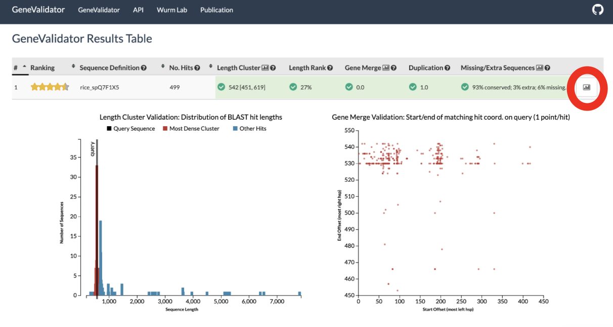

Part 3: Gene Prediction
You need to have gone through Part 2: Genome assembly before starting this practical.
Many tools exist for gene prediction, some based on ab initio statistical models of what a protein-coding gene should look like, others that use similarity with protein-coding genes from other species, and others such as Augustus and SNAP, which use both.
Info
There is no perfect tool or approach, thus we typically run many gene-finding tools and call a consensus between the different predicted gene models.
Pipelines which combine the use of multiople tools include:
In this practical, we will use [MAKER]((http://www.yandell-lab.org/software/maker.html) and again for this practical you will be using the remote AWS computers created for you so please ssh back into these!
1. Running Maker
Task
Following the same procedure from the first read cleaning practical
Part 1: Read cleaning, create a new main directory for today's practical (e.g., 2025-09-24-gene_prediction), the input, tmp, and results subdirectories, and the file WHATIDID.txt to log your commands.
To help get you started
mkdir 2025-09-24-gene_prediction
Your directory hierarchy should look like the following
Terminal
2025-09-24-gene_prediction
├── input
├── tmp
├── results
└── WHATIDID.txt
Next lets link your assembled scaffolds from from yesterdays practical into our input subdirectory. We will be using MAKER to annotate this assembly!
Task
Link the output (assembly) from Part 2 practical into input subdirectory:
cd ~/2025-09-24-gene_prediction/input
ln -s ~/2025-09-23-assembly/results/scaffolds.fasta .
cd ..
Next we are going to pull out the longest few scaffolds from our assembly and create a new file to house these.
seqtk seq -L 10000 input/scaffolds.fasta > tmp/min10000.fa
Info
Note: If you have difficulty in predicting the genes or you suspect that your assembly may be affected by the aforementioned issues, you can use already assembled scaffolds.
# Link this scaffolds file into your input directory
ln -s /shared/data/backup_assembly/scaffolds.fasta .
In the rest of this practical, we will show how to run MAKER in a simple scenario. For a better understanding of how this tool works, and how it can be applied in real-case scenarios, we strongly encourage to read the paper and documentation. Also, checking which settings were used in recent publications can be very helpful for reproducing (or critiquing) analyses.
Info
Here is a link to the MAKER documentation
Question
What bioinformatic tools is MAKER implementing in it genome annotation pipeline?
Task
Now change to your tmp directory and lets start the process of running the maker pipeline:
cd tmp
maker -OPTS
maker_opts.ctl configuration file (ignore the
warnings). Edit that file using a text editor such as nano and
specify:
- genome:
min10000.fa - deactivate RepeatMasker by changing
model_orgline tomodel_org=(i.e., nothing afer=) - deactivate RepeatRunner by changing
repeat_proteinline torepeat_protein=(i.e., nothing after=) - Augustus_species:
honeybee1(remember to add 1 at the end; this provides hints to Augustus about the gene structure based on what we know about gene composition from the honeybee.
We deactivated RepeatMakser and RepeatRunner due to computational limitations
as well as the lack of a suitable library of repetitive elements for this
species. For a real project, we would include RepeatMasker, likely after
creating a new repeat library for our species.
For a real project, we would also include gene expression data (RNAseq improves
gene prediction performance tremendously), protein sequences from related
species, and iteratively train gene prediction algorithms (e.g., Augustus and
SNAP) for our data.
After making the necessary edits we can inspect the maker_opts.ctl by printing it to stout using the following command, allowing us to double check the edits we have made are correct!
cat maker_opts.ctl
Terminal
#-----Genome (these are always required)
genome=min10000.fa
organism_type=eukaryotic #eukaryotic or prokaryotic. Default is eukaryotic
#-----Re-annotation Using MAKER Derived GFF3
maker_gff= #MAKER derived GFF3 file
est_pass=0 #use ESTs in maker_gff: 1 = yes, 0 = no
altest_pass=0 #use alternate organism ESTs in maker_gff: 1 = yes, 0 = no
protein_pass=0 #use protein alignments in maker_gff: 1 = yes, 0 = no
rm_pass=0 #use repeats in maker_gff: 1 = yes, 0 = no
model_pass=0 #use gene models in maker_gff: 1 = yes, 0 = no
pred_pass=0 #use ab-initio predictions in maker_gff: 1 = yes, 0 = no
other_pass=0 #passthrough anyything else in maker_gff: 1 = yes, 0 = no
#-----EST Evidence (for best results provide a file for at least one)
est= #set of ESTs or assembled mRNA-seq in fasta format
altest= #EST/cDNA sequence file in fasta format from an alternate organism
est_gff= #aligned ESTs or mRNA-seq from an external GFF3 file
altest_gff= #aligned ESTs from a closly relate species in GFF3 format
#-----Protein Homology Evidence (for best results provide a file for at least one)
protein= #protein sequence file in fasta format (i.e. from mutiple organisms)
protein_gff= #aligned protein homology evidence from an external GFF3 file
#-----Repeat Masking (leave values blank to skip repeat masking)
model_org=
rmlib= #provide an organism specific repeat library in fasta format for RepeatMasker
repeat_protein=
rm_gff= #pre-identified repeat elements from an external GFF3 file
prok_rm=0 #forces MAKER to repeatmask prokaryotes (no reason to change this), 1 = yes, 0 = no
softmask=1 #use soft-masking rather than hard-masking in BLAST (i.e. seg and dust filtering)
#-----Gene Prediction
snaphmm= #SNAP HMM file
gmhmm= #GeneMark HMM file
augustus_species=honeybee1
fgenesh_par_file= #FGENESH parameter file
pred_gff= #ab-initio predictions from an external GFF3 file
model_gff= #annotated gene models from an external GFF3 file (annotation pass-through)
run_evm=0 #run EvidenceModeler, 1 = yes, 0 = no
est2genome=0 #infer gene predictions directly from ESTs, 1 = yes, 0 = no
protein2genome=0 #infer predictions from protein homology, 1 = yes, 0 = no
trna=0 #find tRNAs with tRNAscan, 1 = yes, 0 = no
snoscan_rrna= #rRNA file to have Snoscan find snoRNAs
snoscan_meth= #-O-methylation site fileto have Snoscan find snoRNAs
unmask=0 #also run ab-initio prediction programs on unmasked sequence, 1 = yes, 0 = no
allow_overlap= #allowed gene overlap fraction (value from 0 to 1, blank for default)
#-----Other Annotation Feature Types (features MAKER doesn't recognize)
other_gff= #extra features to pass-through to final MAKER generated GFF3 file
#-----External Application Behavior Options
alt_peptide=C #amino acid used to replace non-standard amino acids in BLAST databases
cpus=1 #max number of cpus to use in BLAST and RepeatMasker (not for MPI, leave 1 when using MPI)
#-----MAKER Behavior Options
max_dna_len=100000 #length for dividing up contigs into chunks (increases/decreases memory usage)
min_contig=1 #skip genome contigs below this length (under 10kb are often useless)
pred_flank=200 #flank for extending evidence clusters sent to gene predictors
pred_stats=0 #report AED and QI statistics for all predictions as well as models
AED_threshold=1 #Maximum Annotation Edit Distance allowed (bound by 0 and 1)
min_protein=0 #require at least this many amino acids in predicted proteins
alt_splice=0 #Take extra steps to try and find alternative splicing, 1 = yes, 0 = no
always_complete=0 #extra steps to force start and stop codons, 1 = yes, 0 = no
map_forward=0 #map names and attributes forward from old GFF3 genes, 1 = yes, 0 = no
keep_preds=0 #Concordance threshold to add unsupported gene prediction (bound by 0 and 1)
split_hit=10000 #length for the splitting of hits (expected max intron size for evidence alignments)
min_intron=20 #minimum intron length (used for alignment polishing)
single_exon=0 #consider single exon EST evidence when generating annotations, 1 = yes, 0 = no
single_length=250 #min length required for single exon ESTs if 'single_exon is enabled'
correct_est_fusion=0 #limits use of ESTs in annotation to avoid fusion genes
tries=2 #number of times to try a contig if there is a failure for some reason
clean_try=0 #remove all data from previous run before retrying, 1 = yes, 0 = no
clean_up=0 #removes theVoid directory with individual analysis files, 1 = yes, 0 = no
TMP= #specify a directory other than the system default temporary directory for temporary files
Task
Now our configuration file is ready, run MAKER!
maker maker_opts.ctl
Genome annotation software like MAKER usually provide information about the exon-intron structure of the genes (e.g., in GFF3 format), and sequence of corresponding messenger RNA and protein products (e.g., in FASTA format).
Task
While MAKER is running, note the different file formats you have encountered throughout this module up until now.
Question
- What is the difference between a .fq.gz and .fq file?
- What information does the 5th column in a GFF file contain?
Once MAKER has finished running the results will be hidden in subdirectories of min10000.maker.output. MAKER provides a helper script to collect this hidden outputs all in one place (again please ignore the warnings for these steps):
Task
Run the following commands to pull out information about exon-intron structure of the predicted genes. This will be saved to the file min10000.all.gff.
gff3_merge -d min10000.maker.output/min10000_master_datastore_index.log
Next, pull out predicted messenger RNA and protein sequences.
fasta_merge -d min10000.maker.output/min10000_master_datastore_index.log
These will be saved to the files: min10000.all.maker.augustus.transcripts.fasta and min10000.all.maker.augustus.proteins.fasta
2. Quality control of individual genes
So now we have some gene predictions... how can we know if they are any good?
The easiest way to get a feel for this is to use the following example sequences: predicted protein sequences from rice and honeybee.
We will compare them using BLAST to known sequences from other species against the Swissprot database (faster), or the Uniref50 database (slower).
2.1 Running BLAST with SequenceServer
We will use SequenceServer to run the BLAST search!
Task
Open genomicscourse.sequenceserver.com in a new tab in your browser, paste the example rice and honeybee protein sequences in the textbox.
On the right hand side, under protein database select Non-redundant UniProtKB/SwissProt sequences as the database to use!
The image below is what your browser window should look like!

Then click on the 'BLAST' button to begin the BLAST search. This will take a minute or two and the window will look like:

Once the analysis is complete you will get a output report like below:

This report contains a lot of information, but dont be overwhelmed! Focus solely on the alignment section and you can toggle between alignments by selecting either the rice or honeybee sequencing in the top left hand side (as highlighted in red below)
Now in you own time, examin the report and try to answer the questions below!
Question
What sequence is the rice_spQ7F1X5 sequence most similar too?
sp|Q7F1X5.1|RecName: Full=4-coumarate--CoA ligase-like 5 [Oryza sativa Japonica Group] with 100% query coverage and 100% identity.
Question
What sequence is ApisMellifera_SequenceA sequence most similar too?
sp|Q90ZA1.1| RecName: Full=Poly(A)-specific ribonuclease PARN; AltName: Full=Deadenylating nuclease; AltName: Full=Deadenylation nuclease; AltName: Full=Polyadenylate-specific ribonuclease; AltName: Full=parn-A [Xenopus laevis] with 40% query coverage and 42.4% identity.
Question
Look at the full report for the two given gene predictions, do you they are complete, or can you infer from the BLAST alignments that something may be wrong? Start by comparing the length of your gene prediction to that of the BLAST hits alongside other metrics such as identity.
Task
Now try a few of your gene predictions. To do this you can use the predicted protein sequences which you generated and which can be found in min10000.all.maker.augustus.proteins.fasta.
Note - Run BLAST on only a maximum of 12 sequences at a time (instead of simply selecting the first 12 genes in your file, copy-paste sequences randomly from the file). See if you can tell if based on the SequencingServer report generated the quality of the genome annotation!
As you can see, gene prediction software is imperfect. This is even the case when using all available evidence. This is potentially costly for analyses that rely on gene predictions, i.e. many of the analyses we might want to do:
“Incorrect annotations [ie. gene identifications] poison every experiment that makes use of them. Worse still the poison spreads.” – Yandell & Ence (2012).
2.2 Using GeneValidator
The GeneValidator tool can help to evaluate the quality of a gene prediction by comparing features of a predicted gene to similar database sequences. This approach expects that similar sequences should for example be of similar length. Genevalidator was built to automate the comparison of sequence characteristics similarly to what we just did through visual individual BLAST results.
Task
Try to run the example rice and honeybee protein sequences through GeneValidator. It should be accessible at https://genevalidator.genomicscourse.com/ or https://genevalidator.wurmlab.com/.
Copy and paste the xample rice and honey bee sequences into the input text box as shown in the image below.

This make take a few minutes to complete, but on completion the results will appear in the section below. Take a look through the results page along with the original GeneValidator publication (link here) to inspect the proteins generated as part of the gene sequence.

Question
Why is it important to consider the Length Cluster Metric?
When hovering over the metric we get the definition: Check whether the prediction length fits most of the BLAST hit lengths, by 1D hierarchical clusterization.
So it is a way to see if the predicted gene length makes sense by comparing it to the lengths of BLAST matches. The method groups BLAST hit lengths into clusters, then reports:
- The predicted length of the query.
- The main length range where most BLAST hits fall.
If the predicted length is inside that main range, it’s probably accurate.
Task
By selecting the image icon on the right hand side of each query (cirlced in red) you will open the drop down section to see the associated plots.

Now take a look at some of your protein predictions from your own MAKER genome annotation run! How do they look? Can you tell the difference between a good and a bad prediction?
Question
What is the purpose of the Gene Merge Validation Plot?
First lets break down the abbreviations used:
What HSP means
- HSP (High-Scoring Pair) = a stretch of similarity found by BLAST between your query sequence and a database sequence.
-
Each HSP has:
- A start coordinate (where the match begins on the query).
- An end coordinate (where the match stops on the query).
What the graph shows
- X-axis (Start Offset): where the HSP begins on the query sequence (further right = later in the sequence).
- Y-axis (End Offset): where the HSP ends on the query sequence (higher = later in the sequence).
- Each red dot = one HSP, plotted by its start (x) and end (y) positions.
How to interpret this graph
- If all HSPs lined up diagonally in a single cluster, that would suggest they all map to one continuous region (a single gene).
3. Comparing whole genesets and prioritizing genes for manual curation
Genevalidator's visual output can be handy when looking at a few genes. But the tool also provides tab-delimited output, useful when working in the command-line or running the software on whole proteomes. This can help the analysis:
- In situations when you can choose between multiple gene sets.
- To identify which gene predictions are likely correct, and which predictions need might require further inspection and potentially be manually fixed.
4. Manual curation
Because automated gene predictions are not perfect, manual inspection and fixing is often required. The most commonly used software for this is Apollo/WebApollo.
We will not curate any gene models as part of this practical, but you can learn about gene model curation through these YouTube videos:
- EMBL-ABR training 20171121 - Genome Annotation using Apollo
- The i5k Workspace@NAL: a pan-Arthropoda genome database